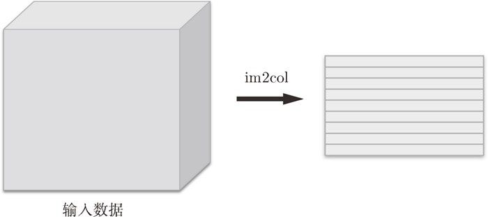
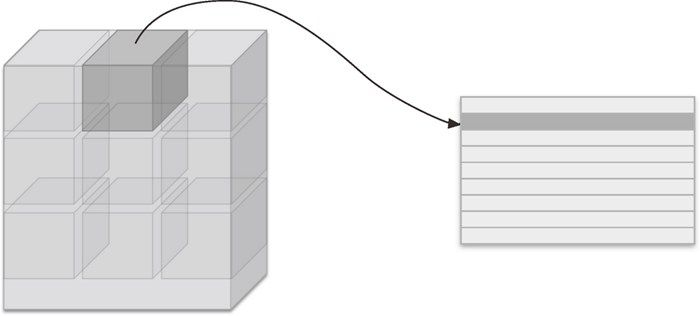
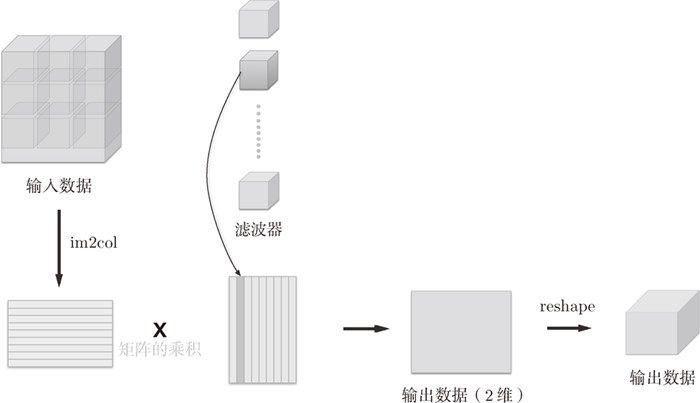
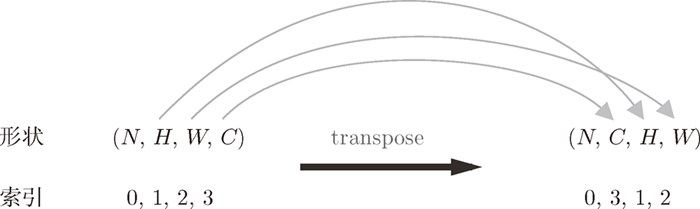
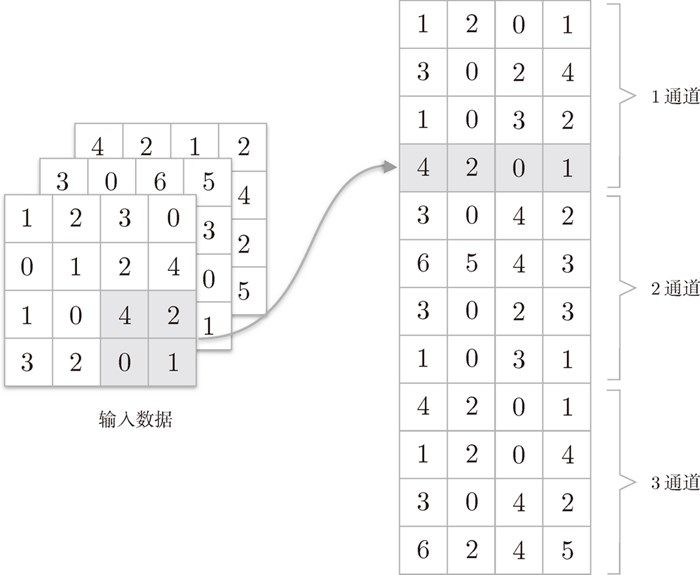
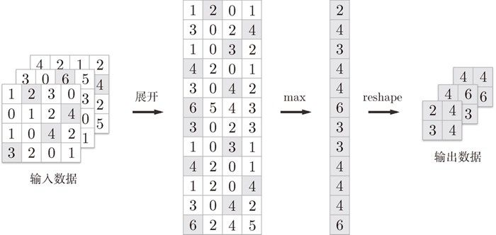

im2col 这个名称是“image to column”的缩写，翻译过来就是“从图像到矩阵”的意思。Caffe、Chainer 等深度学习框架中有名为 im2col 的函数，并且在卷积层的实现中，都使用了 im2col。
前面我们详细介绍了卷积层和池化层，本节我们就用 Python 来实现这两个层。和第 5 章一样，也给进行实现的类赋予 forward 和 backward 方法，并使其可以作为模块使用。
大家可能会感觉卷积层和池化层的实现很复杂，但实际上，通过使用某种技巧，就可以很轻松地实现。本节将介绍这种技巧，将问题简化，然后再进行卷积层的实现。
如前所述，CNN 中各层间传递的数据是 4 维数据。所谓 4 维数据，比如数据的形状是 (10, 1, 28, 28)，则它对应 10 个高为 28、长为 28、通道为 1 的数据。用 Python 来实现的话，如下所示。
>>> x = np.random.rand(10, 1, 28, 28) # 随机生成数据 >>> x.shape (10, 1, 28, 28)
这里，如果要访问第 1 个数据，只要写 x[0] 就可以了（注意 Python 的索引是从 0 开始的）。同样地，用 x[1] 可以访问第 2 个数据。
>>> x[0].shape # (1, 28, 28) >>> x[1].shape # (1, 28, 28)
如果要访问第 1 个数据的第 1 个通道的空间数据，可以写成下面这样。
>>> x[0, 0] # 或者x[0][0]
像这样，CNN 中处理的是 4 维数据，因此卷积运算的实现看上去会很复杂，但是通过使用下面要介绍的 im2col 这个技巧，问题就会变得很简单。
如果老老实实地实现卷积运算，估计要重复好几层的 for 语句。这样的实现有点麻烦，而且，NumPy 中存在使用 for 语句后处理变慢的缺点（NumPy 中，访问元素时最好不要用 for 语句）。这里，我们不使用 for 语句，而是使用 im2col 这个便利的函数进行简单的实现。
im2col 是一个函数，将输入数据展开以适合滤波器（权重）。如图 7-17 所示，对 3 维的输入数据应用 im2col 后，数据转换为 2 维矩阵（正确地讲，是把包含批数量的 4 维数据转换成了 2 维数据）。

图 7-17 im2col 的示意图
im2col 会把输入数据展开以适合滤波器（权重）。具体地说，如图 7-18 所示，对于输入数据，将应用滤波器的区域（3 维方块）横向展开为 1 列。im2col 会在所有应用滤波器的地方进行这个展开处理。

图 7-18 将滤波器的应用区域从头开始依次横向展开为 1 列
在图 7-18 中，为了便于观察，将步幅设置得很大，以使滤波器的应用区域不重叠。而在实际的卷积运算中，滤波器的应用区域几乎都是重叠的。在滤波器的应用区域重叠的情况下，使用 im2col 展开后，展开后的元素个数会多于原方块的元素个数。因此，使用 im2col 的实现存在比普通的实现消耗更多内存的缺点。但是，汇总成一个大的矩阵进行计算，对计算机的计算颇有益处。比如，在矩阵计算的库（线性代数库）等中，矩阵计算的实现已被高度最优化，可以高速地进行大矩阵的乘法运算。因此，通过归结到矩阵计算上，可以有效地利用线性代数库。
im2col这个名称是“image to column”的缩写，翻译过来就是“从图像到矩阵”的意思。Caffe、Chainer 等深度学习框架中有名为im2col的函数，并且在卷积层的实现中，都使用了im2col。
使用 im2col 展开输入数据后，之后就只需将卷积层的滤波器（权重）纵向展开为 1 列，并计算 2 个矩阵的乘积即可（参照图 7-19）。这和全连接层的 Affine层进行的处理基本相同。
如图 7-19 所示，基于 im2col 方式的输出结果是 2 维矩阵。因为 CNN 中数据会保存为 4 维数组，所以要将 2 维输出数据转换为合适的形状。以上就是卷积层的实现流程。

图 7-19 卷积运算的滤波器处理的细节：将滤波器纵向展开为 1 列，并计算和 im2col 展开的数据的矩阵乘积，最后转换（reshape）为输出数据的大小
本书提供了 im2col 函数，并将这个 im2col 函数作为黑盒（不关心内部实现）使用。im2col 的实现内容在 common/util.py 中，它的实现（实质上）是一个 10 行左右的简单函数。有兴趣的读者可以参考。
im2col 这一便捷函数具有以下接口。
im2col (input_data, filter_h, filter_w, stride=1, pad=0)
input_data——由（数据量，通道，高，长）的 4 维数组构成的输入数据filter_h——滤波器的高filter_w——滤波器的长stride——步幅pad——填充
im2col 会考虑滤波器大小、步幅、填充，将输入数据展开为 2 维数组。现在，我们来实际使用一下这个 im2col。
import sys, os
sys.path.append(os.pardir)
from common.util import im2col
x1 = np.random.rand(1, 3, 7, 7)
col1 = im2col(x1, 5, 5, stride=1, pad=0)
print(col1.shape) # (9, 75)
x2 = np.random.rand(10, 3, 7, 7) # 10个数据
col2 = im2col(x2, 5, 5, stride=1, pad=0)
print(col2.shape) # (90, 75)
这里举了两个例子。第一个是批大小为 1、通道为 3 的 7 × 7 的数据，第二个的批大小为 10，数据形状和第一个相同。分别对其应用 im2col 函数，在这两种情形下，第 2 维的元素个数均为 75。这是滤波器（通道为 3、大小为 5 × 5）的元素个数的总和。批大小为 1 时，im2col 的结果是 (9, 75)。而第 2 个例子中批大小为 10，所以保存了 10 倍的数据，即 (90, 75)。
现在使用im2col 来实现卷积层。这里我们将卷积层实现为名为Convolution 的类。
class Convolution:
def __init__(self, W, b, stride=1, pad=0):
self.W = W
self.b = b
self.stride = stride
self.pad = pad
def forward(self, x):
FN, C, FH, FW = self.W.shape
N, C, H, W = x.shape
out_h = int(1 + (H + 2*self.pad - FH) / self.stride)
out_w = int(1 + (W + 2*self.pad - FW) / self.stride)
col = im2col(x, FH, FW, self.stride, self.pad)
col_W = self.W.reshape(FN, -1).T # 滤波器的展开
out = np.dot(col, col_W) + self.b
out = out.reshape(N, out_h, out_w, -1).transpose(0, 3, 1, 2)
return out
卷积层的初始化方法将滤波器（权重）、偏置、步幅、填充作为参数接收。滤波器是 (FN, C, FH, FW) 的 4 维形状。另外，FN、C、FH、FW 分别是 Filter Number（滤波器数量）、Channel、Filter Height、Filter Width 的缩写。
这里用粗体字表示 Convolution 层的实现中的重要部分。在这些粗体字部分，用 im2col 展开输入数据，并用 reshape 将滤波器展开为 2 维数组。然后，计算展开后的矩阵的乘积。
展开滤波器的部分（代码段中的粗体字）如图 7-19 所示，将各个滤波器的方块纵向展开为 1 列。这里通过 reshape(FN,-1) 将参数指定为 -1，这是 reshape 的一个便利的功能。通过在 reshape 时指定为 -1，reshape 函数会自动计算 -1 维度上的元素个数，以使多维数组的元素个数前后一致。比如，(10, 3, 5, 5) 形状的数组的元素个数共有 750 个，指定 reshape(10,-1) 后，就会转换成 (10, 75) 形状的数组。
forward 的实现中，最后会将输出大小转换为合适的形状。转换时使用了 NumPy 的 transpose 函数。transpose 会更改多维数组的轴的顺序。如图 7-20 所示，通过指定从 0 开始的索引（编号）序列，就可以更改轴的顺序。

图 7-20 基于 NumPy 的 transpose 的轴顺序的更改：通过指定索引（编号），更改轴的顺序
以上就是卷积层的 forward 处理的实现。通过使用 im2col 进行展开，基本上可以像实现全连接层的 Affine 层一样来实现（5.6 节）。接下来是卷积层的反向传播的实现，因为和 Affine 层的实现有很多共通的地方，所以就不再介绍了。但有一点需要注意，在进行卷积层的反向传播时，必须进行 im2col 的逆处理。这可以使用本书提供的 col2im 函数（col2im 的实现在 common/util.py 中）来进行。除了使用 col2im 这一点，卷积层的反向传播和 Affine 层的实现方式都一样。卷积层的反向传播的实现在 common/layer.py 中，有兴趣的读者可以参考。
池化层的实现和卷积层相同，都使用 im2col 展开输入数据。不过，池化的情况下，在通道方向上是独立的，这一点和卷积层不同。具体地讲，如图 7-21 所示，池化的应用区域按通道单独展开。

图 7-21 对输入数据展开池化的应用区域（2×2 的池化的例子）
像这样展开之后，只需对展开的矩阵求各行的最大值，并转换为合适的形状即可（图 7-22）。

图 7-22 池化层的实现流程：池化的应用区域内的最大值元素用灰色表示
上面就是池化层的 forward 处理的实现流程。下面来看一下 Python 的实现示例。
class Pooling:
def __init__(self, pool_h, pool_w, stride=1, pad=0):
self.pool_h = pool_h
self.pool_w = pool_w
self.stride = stride
self.pad = pad
def forward(self, x):
N, C, H, W = x.shape
out_h = int(1 + (H - self.pool_h) / self.stride)
out_w = int(1 + (W - self.pool_w) / self.stride)
# 展开(1)
col = im2col(x, self.pool_h, self.pool_w, self.stride, self.pad)
col = col.reshape(-1, self.pool_h*self.pool_w)
# 最大值(2)
out = np.max(col, axis=1)
# 转换(3)
out = out.reshape(N, out_h, out_w, C).transpose(0, 3, 1, 2)
return out
如图 7-22 所示，池化层的实现按下面 3 个阶段进行。
- 展开输入数据。
- 求各行的最大值。
- 转换为合适的输出大小。
各阶段的实现都很简单，只有一两行代码。
np.max方法。np.max可以指定axis参数，并在这个参数指定的各个轴方向上求最大值。比如，如果写成np.max(x, axis=1)，就可以在输入x的第 1 维的各个轴方向上求最大值。
以上就是池化层的 forward 处理的介绍。如上所述，通过将输入数据展开为容易进行池化的形状，后面的实现就会变得非常简单。
关于池化层的 backward 处理，之前已经介绍过相关内容，这里就不再介绍了。另外，池化层的 backward 处理可以参考 ReLU 层的实现中使用的 max 的反向传播（5.5.1 节）。池化层的实现在 common/layer.py 中，有兴趣的读者可以参考。